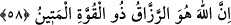

Tefsîrû’l-Münâsebât’da belirtildiği üzere bu âyette “rızk”ın “yiyecek”ten daha
şûmûllü olduğu kasdedilmektedir.
Bazı ulemâ, âyetin “beni beslemelerini de istemiyorum” kısmını “benim
mahlûkâtımdan birini beslemelerini de istemiyorum” şeklinde takdir etmişlerdir. Ancak
burada “besleme” fiili Allah’a isnad edilmiştir. Çünki mahlûkat Allah’ın âilesi gibidir.
Nasıl ki ailesini besleyen bir kimseye nisbetle çoluk-çocuğu ve hanımı onun iyâli
oluyorsa, Allah’ın, nafakasını verdiği mahlûkat da O’nun iyâlidir. Bu husustaki bir kudsî
hadiste Allah şöyle buyuruyor: “Senden rızık talep ettim de sen beni
besleyemedin,”[35] yâni hiç bir kulum beni besleyemedi.
Bundan anlaşılıyor ki, “beslenme ve rızık talebi”nin Allah tarafından yapılması,
O’nun için muhaldir.
58. Şüphesiz rızık veren, güç ve kuvvet sâhibi olan ancak Allah’tır.
“Şüphesiz rızık veren ancak Allah’tır.” Bu ifâde, Allah’ın, insan ve cinlerden rızık
talebinde bulunmayacağını gösteren bir sebep cümlesidir. Huve zamiri de sıfatın mevsuf
üzerine kasredilmesini gerektirir. Yâni her rızka muhtaç olanı rızıklandıran Allah’tan
başka hiç bir rezzâk yoktur. Bu, aynı zamanda Allah’ın rızıktan müstağnî olduğuna da
işâret etmektedir.
Bütün yaratıkları üzerinde “kuvvet sâhibi olan ancak Allah’tır.” Bu cümle de
Allah’ın, kullardan, kendisi için çalışıp gayret ederek O’na yiyecek götürmelerini de
murad etmediğini gösteren bir sebep cümlesidir. Zira işleri için başkasından yardım
dileyen, güçsüz ve âciz olur.
el-Metîn, “kuvveti çok sağlam” demektir. Çünkü “kuvvet” kudretin kemâline,
“metânet” de kuvvetin sağlamlığına delâlet eder.
et-Te’vîlâtü’n-Necmiyye’de denilir ki: Muhakkak ki Allah, bütün mahlûkatın rızık
verenidir, rızıkların ve rızıklananların yaratılmasında da sağlam kuvvet sâhibidir.
Müfredât’da şöyle geçer: Kuvvet; bazen kudret, bazen de bir şeyde var olan hâzır bir
güç anlamlarına gelebildiği gibi, bazen de bedenin sağlamlığı, cesaret, dışardan takviye
edici bir yardımcı ve kudret-i ilâhiye mânâlarına da gelmektedir. “Sağlam kuvvet
sâhibi” sözü, Allah’ın, mahlukâtı için yaptığı her işe tahsis ettiği kudretini gösteren
umûm bir ifâdedir.
Fakir (Bursevî) der ki: Kuvvetin asıl mânâsı daha önce geçtiği üzre “bir binanın
sağlamlığı ve sertliği”dir. Bundan da anlaşılıyor ki kuvvet, zâfiyetin ve zayıflığın
zıddıdır. Allah Teâlâ bundan münezzehtir. Kuvvet kelimesi Allah Teâlâ’ya nisbet
edilince mânâsı “kâmil güç” anlamını taşır. Yine bu isim, ilâhî esmâ ve sıfatların
mazharlarının güçlü olmasıyla da tefsir edilebilir.